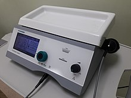
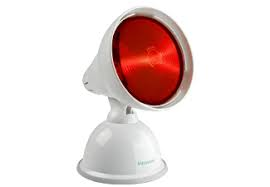
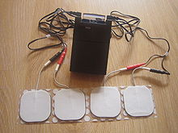

La kinesiología o quinesilogía (del griego kínēsis 'movimiento', y logos, 'tratado, estudio') es el estudio científico del movimiento del cuerpo. La kinesiología aborda los principios y mecanismos de movimientos fisiológicos, biomecánicos y psicodinámicos. Las aplicaciones de la kinesiología a la salud humana (es decir, kinesiología humana) incluyen biomecánica y ortopedia (fuerza y acondicionamiento), psicología del deporte (control motor) adquisición de habilidades y aprendizaje motor, métodos de rehabilitación (terapia física y ocupacional) y fisiología del deporte y el ejercicio. Los estudios del movimiento humano y animal incluyen medidas de sistemas de seguimiento de movimiento, electrofisiología de la actividad muscular y cerebral. Así como varios métodos para monitorear la función fisiológica y otras técnicas de investigación cognitiva y conductual.
"Kinesiologia"Agentes Fisicos
| Agente Fisico | Aplicacion | Ejemplo | |
| Magneto | Terapia mediante Campos Electromagnéticos  |
Se utiliza en patologías:como la descalcificación, espondilitis, artrosis, citalgia, tendinitis, contracturas, contusiones, lumbalgia, en patologías que causan inflamación y en la cicatrización de tejidos. | |
| Ultrasonido | Aplicación de ultrasonidos . | Suele recomendarse para tratamiento de procesos inflamatorios, articulares, lesiones del músculo y el tendón y otras como la algodistrofia simpático refleja | |
| Termoterapia | Terapia por el Calor  | La terapia de calor es útil para tratar los espasmos musculares, mialgia, fibromialgia, contracturas, bursitis | |
| Electroterapia | aplicación de corrientes eléctricas. | Se aplica en procesos dolorosos, inflamatorios músculo-esqueléticos y nerviosos periféricos, así como en atrofias y lesiones musculares y parálisis. | |
| Equipos se conbinan para diversos tratamientos | |||
|
|||
¿Que es la Kinesioterapia?
La kinesioterapia, kinesiterapia o cinesiterapia (en algunos países) es la ciencia del tratamiento de enfermedades y lesiones mediante el movimiento. Está englobada en el área de conocimiento de la fisioterapia.
- OBJETIVOS
- Mantener una capacidad funcional normal.
- Perfeccionar la respuesta muscular.
- Estimular la propiocepción del movimiento
- Tratar incapacidades como la tetraplejía, paraplejía así como hemiplejías.
- Evitar la rigidez articular.
- Prevención y tratamiento de enfermedades respiratorias>.
¿Que es la Magnetoterapia?
La magnetoterapia es una práctica dentro de la Fisioterapia que emplea campos magnéticos estáticos o permanentes sobre el cuerpo. La aplicación se efectúa mediante imanes de alta o baja frecuencia según el tipo de patología a tratar. Es especialmente efectivo en el tratamiento de cuadros de dolor como consecuencia de inflamaciones aunque puede emplearse para solucionar un gran número de enfermedades gracias a sus escasos efectos secundarios. Aun así, es una técnica que no está indicada en pacientes con marcapasos, cáncer o mujeres embarazadas y los campos magnéticos aplicados nunca deben incidir sobre el corazón.